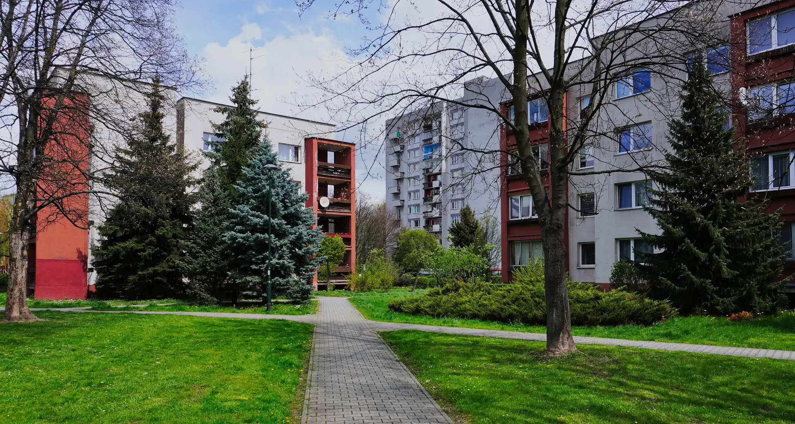
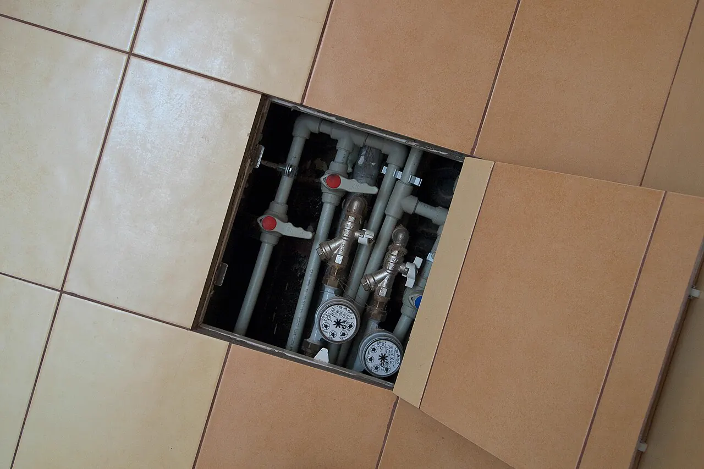
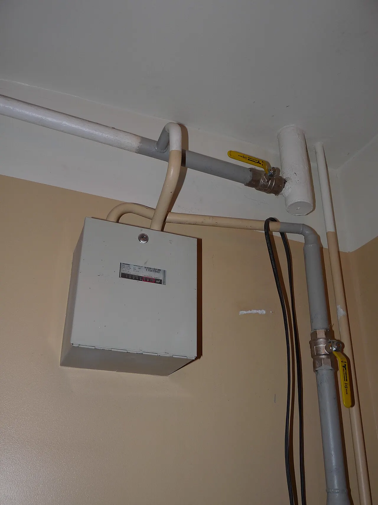
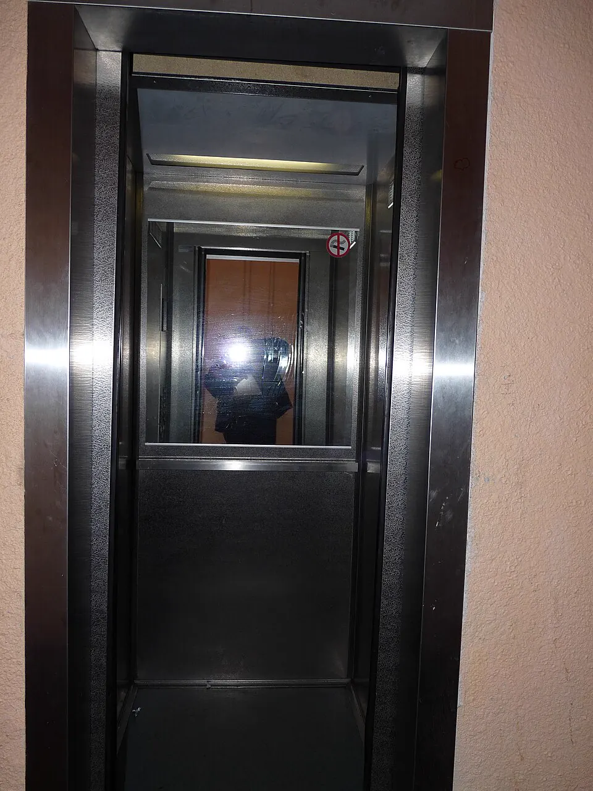
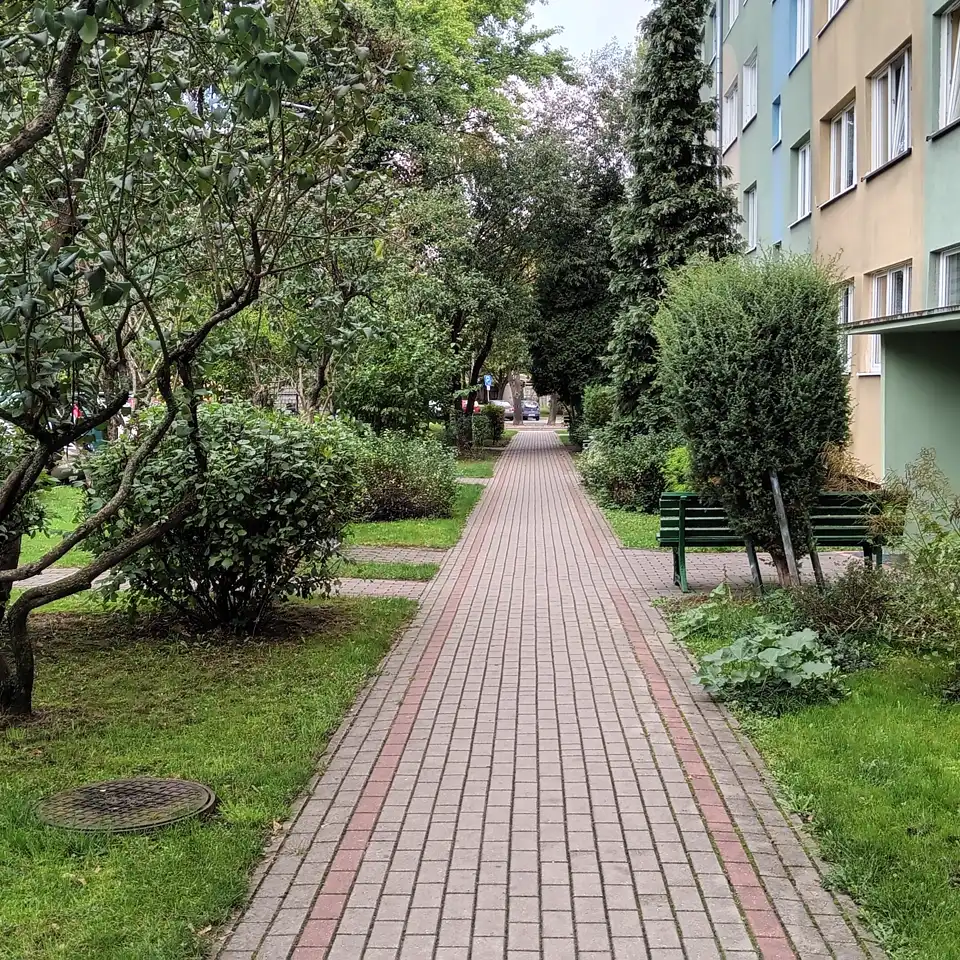
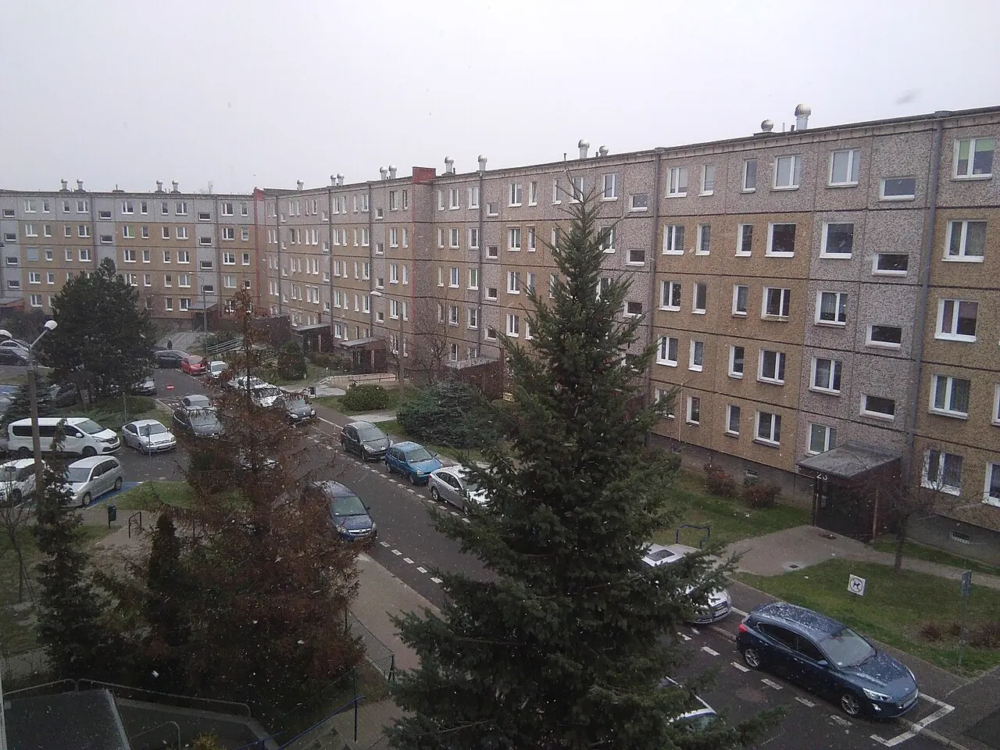

Spółdzielnia Słoneczne Wzgórze
Spółdzielnia mieszkaniowa osiedli Słoneczne Wzgórze i Przylesie: 6 budynków, 412 mieszkań. Pogotowie awaryjne całą dobę: +48 000 000 999.
Pogotowie awaryjne 24 godziny na dobę
Woda, gaz i winda, także w nocy i w święta:+48 000 000 999
-
Zalewa mieszkanie albo pękła rura
Zakręć zawór przy wodomierzu w swoim mieszkaniu i zadzwoń na pogotowie. Podaj budynek, klatkę i numer mieszkania.

-
Czuć gaz w mieszkaniu lub na klatce
Nie włączaj światła ani urządzeń. Otwórz okna, zakręć zawór przy gazomierzu, wyjdź z mieszkania i zadzwoń sprzed budynku. W nagłym zagrożeniu dzwoń też pod 112.

-
Winda stanęła między piętrami
Naciśnij przycisk alarmu w kabinie i zaczekaj na pomoc. Nie otwieraj drzwi siłą. Sąsiad może zadzwonić na pogotowie za Ciebie.

Ogłoszenia na grudzień 2026
- Przerwa w dostawie zimnej wody
Budynek Przylesie 4, od 8:00 do 14:00.
3 grudnia - Roczne przeglądy instalacji gazowej
We wszystkich budynkach. Harmonogram wisi na klatkach schodowych.
7–18 grudnia - Biuro nieczynne
W te dni pogotowie awaryjne odbiera jak zwykle.
24 i 31 grudnia

Dokumenty spółdzielni
Udostępniamy je na podstawie art. 8¹ ust. 3 ustawy o spółdzielniach mieszkaniowych. Wpisz nazwę albo wybierz rodzaj.
7 dokumentów
- Statut Spółdzielni
Tekst jednolity, marzec 2026
Statut - Regulamin porządku domowegoRegulamin
- Regulamin rozliczania kosztów zużycia wodyRegulamin
- Uchwała Zarządu nr 14/2026 w sprawie wymiany wodomierzyUchwała
- Protokół z Walnego Zgromadzenia, czerwiec 2026Protokół obrad
- Protokół lustracji za lata 2023–2025Lustracja
- Sprawozdanie finansowe za 2025 rokSprawozdanie
Nie ma takiego dokumentu. Zmień słowo albo zapytaj w biurze.
Biuro spółdzielni
00-000 Miasto
- Poniedziałek
- 10:00–18:00
- Wtorek–piątek
- 7:30–15:30
- Telefon do biura+48 000 000 001
- E-mailbiuro@example.com
- Biuro nieczynne24 i 31 grudnia 2026
